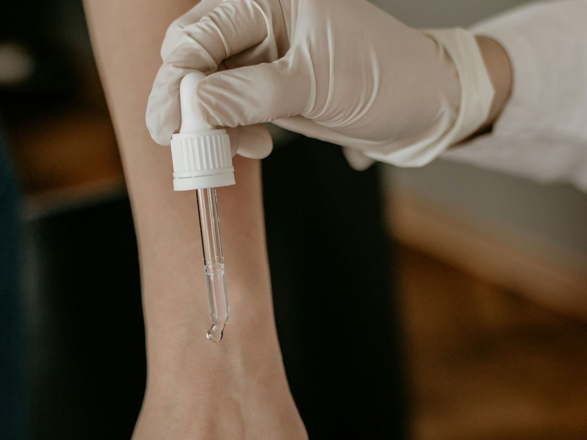
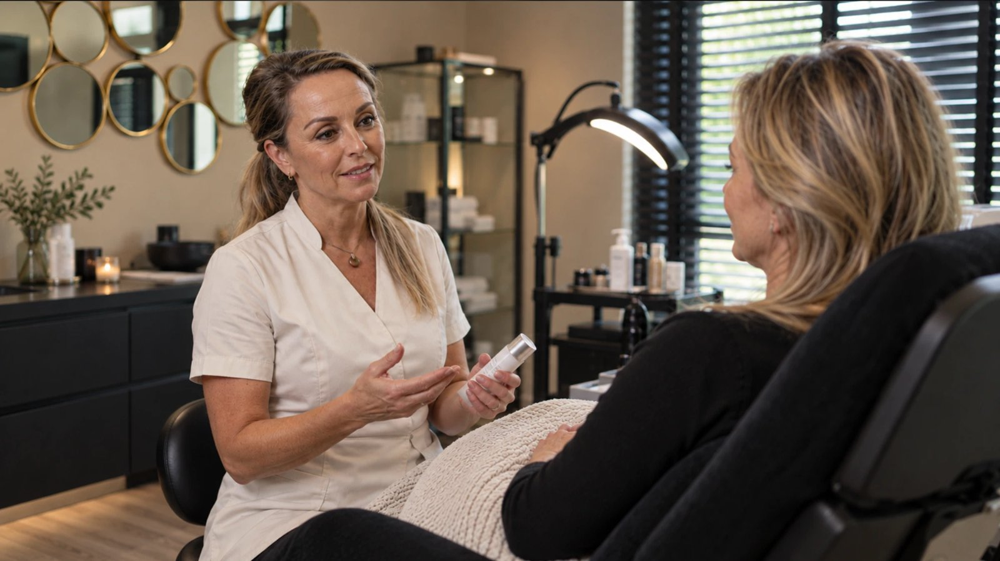
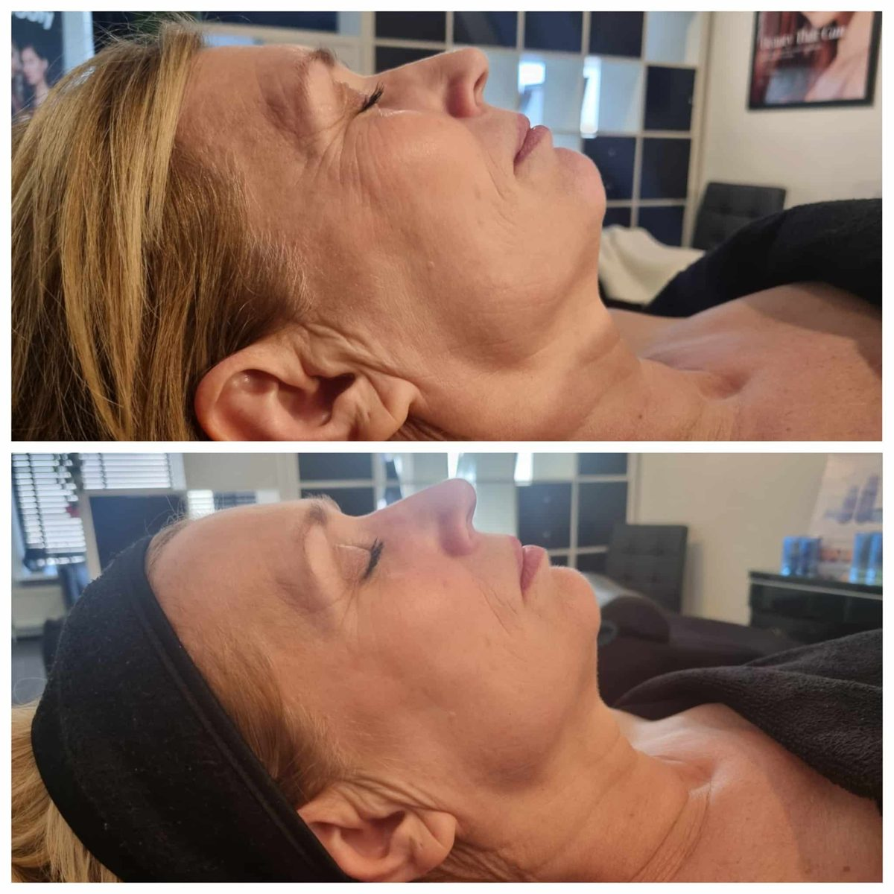

Er zijn veel huidbehandelingen die beloven je huid te verjongen. Maar achter de meeste schuilt helaas alleen maar marketing. Om peptides eerlijk te beoordelen is het essentieel om te kijken naar klinisch bewezen resultaten.
In de VS is het al jaren een van de best bewaarde geheimen van top dermatologen en celebrities. Nu is deze behandeling ook beschikbaar in Apeldoorn. Dit is wat je moet weten.
1Peptides zijn geen ingrediënt — het zijn DNA boodschappers
De meeste anti-aging producten werken op het oppervlak van je huid. Ze hydrateren, beschermen, of bedekken. Peptides doen iets fundamenteel anders: ze communiceren met je DNA en huidcellen.
Zodra peptides je huid binnendringen, geven ze een specifiek signaal af aan het DNA van je cellen: Maak meer collageen aan. Herstel beschadigde elastine. Activeer het natuurlijke vernieuwingsproces.
Waar de meeste behandelingen van buitenaf proberen te repareren, gebruiken peptides je eigen herstelapparaat in de cellen van je huid.

2Waarom dermatologen het zelf gebruiken
Vraag een ervaren dermatoloog welke behandeling ze zelf graag kiezen, en het antwoord is opvallend vaak peptide-gebaseerd. Niet omdat het nieuw is — maar omdat de wetenschap erachter vast staat.
Klinisch bewezen
Onderzoek gepubliceerd in het International Journal of Molecular Sciences toont aan dat specifieke peptide-combinaties de collageenproductie met tot wel 300% kunnen stimuleren — zonder invasieve ingrepen.
Het verschil met injectables en lasers? Peptides werken samen met je biologie in plaats van ertegen. Geen downtime, geen risico op overbehandeling of side-effecten, en resultaten die blijven verbeteren omdat je huid zichzelf vernieuwt.

3Waarom een gewone facial dit niet kan
Een standaard gezichtsbehandeling reinigt, exfolieert en hydrateert. Dat voelt prettig — maar het verandert niets aan de onderliggende processen van huidveroudering. Na een week ziet je huid er weer hetzelfde uit.
Het verschil zit in wat er op cellulair niveau gebeurt. Een HydroPeptide behandeling verhoogt de "doorlaatbaarheid" van de huid, waarna gerichte peptides diep in je huidcellen worden gebracht.
Het resultaat: Je huid start een vernieuwingsproces dat tekenen van stress en fijne lijntjes vermindert en huidveroudering vertraagt, in 1 behandeling.

4Van Hollywood naar Apeldoorn
HydroPeptide werd in de VS ontwikkeld en groeide uit tot de behandeling waar Hollywood celebrities en BN'ers op vertrouwen. Niet vanwege trends, maar vanwege één ding: omdat ze buitengewone resultaten zien.
In Nederland is de behandeling tot voor kort nauwelijks beschikbaar geweest. UvaCare in Apeldoorn is een van de weinige salons die gecertificeerd is om de volledige HydroPeptide Facial aan te bieden — met dezelfde protocollen en professionele producten die in de VS worden gebruikt.
5Wat je kunt verwachten na één sessie
Dit is geen behandeling waar je weken op resultaat moet wachten of je hele lifestyle overhoop moet gooien. Na de eerste HydroPeptide Facial merkt 98% direct verschil:
Je huid voelt jonger en levendiger aan — niet alleen aan het oppervlak, maar dieper. Fijne lijntjes zijn zichtbaar verminderd. Je teint is egaler, helderder, en heeft een natuurlijke glow die er eerder niet was. In de dagen en weken erna blijft je huid verbeteren doordat de peptides het DNA-vernieuwingsproces in gang hebben gezet.
Resultaat na één sessie
- Verminderde tekenen van stress
- Verminderde fijne lijntjes
- Natuurlijke, stralende glow
- Een tijdmachine voor de huid
- Vertraging van huidveroudering

6Waarom nu het moment is
Elke dag verliest je huid collageen dat niet vanzelf wordt aangevuld. Hoe eerder je het natuurlijke herstelapparaat van je huid activeert, hoe groter het effect.
UvaCare biedt de HydroPeptide Facial nu aan als volledige, gepersonaliseerde behandeling — inclusief Skinsign AI-gestuurde huidanalyse, peptide-peeling, gerichte peptide-infusie en afsluitend masker. Elke sessie wordt volledig afgestemd op jouw unieke huid.